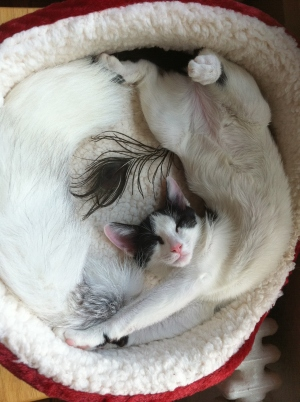

Sudoku Resolv's existence is much obliged to the following persons and (free) products:
- OpenCV Library (Willow Garage) - A free open source computer vision library.
- Basic OCR in OpenCV (damiles) - Sample code on how to utilize OpenCV's Machine Learning Module for basic OCR.
- Using OpenCV on iPhone (yoshimasa niwa) - Sample code which converts between iPhone's UIImage and OpenCV's IplImage.
- OpenCV Build Script for MacOS (Odessa) - CMake script which simplifies the building of OpenCV source code under iOS environment.
- Zhuoshi Wei - Thanks for having recommended the recognition algorithm currently in use (version 1.1.0). It reduces recognition time by 35% to 200% depending on input, and accuracy is generally increased, compared to the previous version.
Last but not least, I would like to thank Isaac Newton for his infinite patience and sharing the same sleeping schedule as me. No cats were harmed during the development of this App.
Pic related: it's him.
